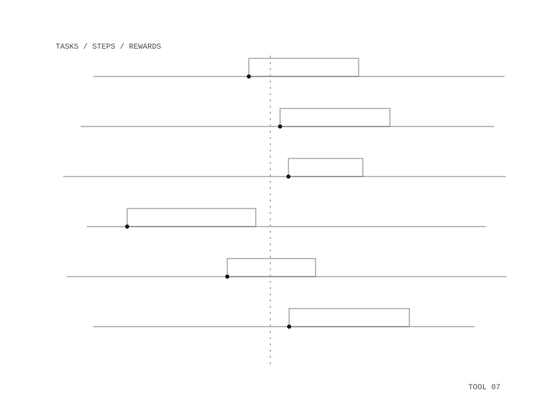

Coach
Coach is an executive-functioning coach built around one loop: capture a to-do, break it into tiny steps, complete it, and get rewarded with points, XP, levels, streaks, badges and rewards you set yourself. A web app and a native iOS app speak to the same server through one REST interface.

Finishing a task
Completing a task is one atomic transaction that marks the task done, records the completion, adds points to the ledger, advances the streak, checks for new badges, and returns one result the app reconciles against. The apps update instantly on tap and then correct themselves from the server's answer. Sending the same completion twice, as an offline retry would, never awards twice.
The economy
Every earn and spend is one row in an append-only ledger; nothing is updated or deleted, and corrections are new rows. XP is permanent and sets your level, while points are spent on the rewards you set; streak multipliers and the daily bonus apply only to points. Redeeming a reward touches points only, never XP or level. Streaks forgive: one missed day in any seven-day window is absorbed by a grace token, and larger gaps reset the count to one.
Skills from DBT
The behavioral layer borrows skills and framing from Dialectical Behavior Therapy for starting and following through on everyday tasks; it is not therapy, a crisis service or a diagnosis. The copy rule is to validate first and then invite change, never shame. What is built:
- a skippable capacity check-in on the Today screen, rating mood and energy from 1 to 5
- when energy is low, Today brings small tasks forward and folds the large ones under "Bigger stuff, only if you want"
- an "I'm stuck" sheet with paced breathing, 5-4-3-2-1 grounding, urge surfing, a two-minute opposite-action timer and a self-soothe menu, each logged when used
- overdue tasks shown as a warm card with a "2 minutes" button and a "break it smaller" option, never a red flag
How it is built
The server is a Node and TypeScript API layered strictly as route, service, database; all reward arithmetic is pure code tested without a database or a clock. Postgres holds all state and Redis handles sign-out of login tokens; both run from Docker on the local machine.
a web app and a native iOS app, both talking to one server backed by Postgres and Redis
points, XP, levels, streaks, badges and rewards you set yourself